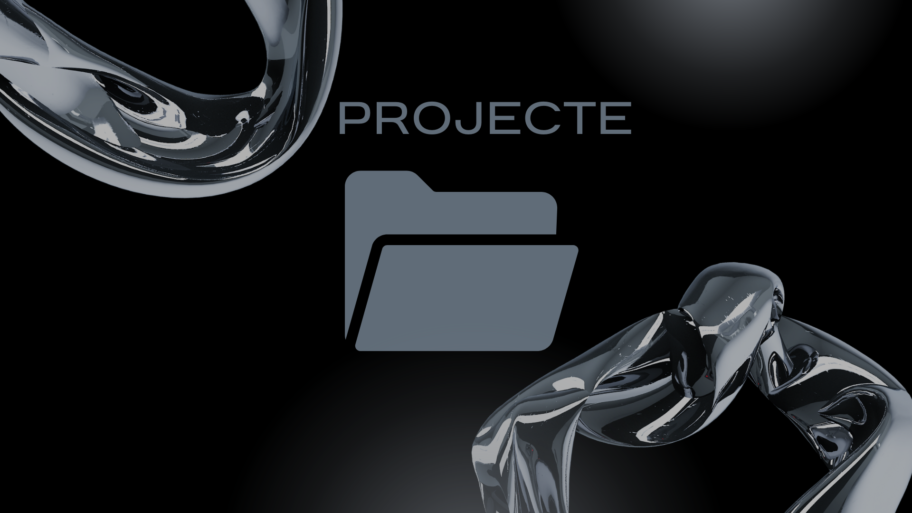

Sobre mi
Qui sóc?
Oliverio Choren Espinel · 2n GM Gestió Administrativa

Soc l'Oliverio Chorén Espinel, tinc 19 anys i actualment estic cursant un grau mitjà en Gestió Administrativa. Em considero una persona responsable, constant i amb una actitud positiva davant l'aprenentatge i els nous reptes.
Anteriorment, vaig cursar batxillerat, però després de repetir curs vaig decidir replantejar el meu camí acadèmic i explorar altres opcions formatives. Durant aquest procés, em vaig inscriure en un grau de Nàutica, ja que sempre he tingut interès pel mar i pels esports relacionats amb aquest entorn. Tot i això, després de pocs dies vaig adonar-me que no s'ajustava als meus interessos ni a les meves expectatives, fet que em va portar a buscar una alternativa més adequada al meu perfil.
Finalment, vaig accedir al grau de Gestió Administrativa, una opció que inicialment no em motivava especialment, però que amb el temps m'ha sorprès de manera molt positiva. A través d'aquests estudis, estic adquirint coneixements sobre el funcionament legal i administratiu de les empreses, així com nocions de comptabilitat i gestió, que considero molt útils tant per al meu futur professional com per al desenvolupament personal. A més, crec que aquesta formació em pot ajudar si en algun moment decideixo emprendre i treballar pel meu compte.
Paral·lelament als estudis, treballo com a monitor de vela, windsurf i wingsurf. Fa anys que practico aquests esports i, actualment, imparteixo classes tant durant l'estiu com al llarg de l'any, principalment de dimecres a divendres a la tarda i els dissabtes al matí. Aquesta experiència laboral m'ha permès desenvolupar habilitats com la responsabilitat, la comunicació, el tracte amb diferents perfils de persones i la gestió del temps.
Tot i que és una feina que m'agrada i em motiva, aspiro a continuar formant-me i progressant professionalment per aconseguir, en el futur, ser el meu propi cap i gestionar els meus propis projectes. El meu objectiu és combinar els coneixements administratius amb la meva experiència personal per construir un projecte estable, sòlid i alineat amb els meus interessos.
Em defineixo com una persona amb ganes de millorar constantment, oberta a nous aprenentatges i compromesa amb el meu futur acadèmic i professional.
Com aprenc?
Aprenc millor quan rebo instruccions clares, ben explicades i estructurades. M'ajuda molt seguir tutorials de qualitat, especialment a través de vídeos de YouTube, ja que puc veure pas a pas com es fan les coses i repetir-les tantes vegades com sigui necessari fins a entendre-les bé. Aquest tipus d'aprenentatge visual i pràctic em permet avançar amb més seguretat i confiança.
També aprenc molt mitjançant la pràctica i l'error. Quan poso en pràctica el que estic estudiant, encara que al principi m'equivoqui, aconsegueixo entendre millor els conceptes i recordar-los durant més temps. Considero que equivocar-me forma part del procés d'aprenentatge, ja que em permet detectar en què fallo i millorar progressivament.
Els esquemes, mapes conceptuals o resums visuals no m'ajuden gaire, ja que no connecto fàcilment amb aquest tipus de materials. De la mateixa manera, els documents molt llargs o amb massa text em costen d'entendre i mantenir l'atenció. Prefereixo explicacions directes, exemples pràctics i situacions reals que pugui relacionar amb el meu dia a dia.
D'altra banda, els números són l'àmbit amb el qual em sento més còmode. Les activitats relacionades amb càlculs, comptabilitat o dades numèriques les entenc amb més facilitat, especialment quan puc treballar-les de manera pràctica. Això fa que em senti més motivat en assignatures o tasques on hi ha continguts matemàtics o econòmics.
En conclusió, el meu estil d'aprenentatge es basa principalment en l'observació, la pràctica i l'experiència directa.